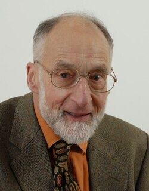

Robin Milner | |
|---|---|
 | |
| Born | Arthur John Robin Gorell Milner 13 January 1934 |
| Died | 20 March 2010 (aged 76) |
| Education | King's College, Cambridge (BA) |
| Known for |
|
| Awards |
|
| Scientific career | |
| Fields | Computer science |
| Institutions | |
Doctoral students | Mads Tofte (1988) Faron Moller Chris Tofts Davide Sangiorgi (1993)[2][3] |
Arthur John Robin Gorell Milner (13 January 1934 – 20 March 2010) was a British computer scientist, and he won the 1991 ACM Turing Award.[4][5][6][7][8][9]
Milner was born in Yealmpton, near Plymouth, England into a military family. He gained a King's Scholarship to Eton College in 1947, and was awarded the Tomline Prize (the highest prize in Mathematics at Eton) in 1952. Subsequently, he served in the Royal Engineers, attaining the rank of Second Lieutenant. He then enrolled at King's College, Cambridge, graduating in 1957.[10] Milner first worked as a schoolteacher then as a programmer at Ferranti, before entering academia at City University, London, then Swansea University, Stanford University, and from 1973 at the University of Edinburgh, where he was a co-founder of the Laboratory for Foundations of Computer Science (LFCS). He returned to Cambridge as the head of the Computer Laboratory in 1995 from which he eventually stepped down, although he was still at the laboratory. From 2009, Milner was a Scottish Informatics & Computer Science Alliance Advanced Research Fellow and held (part-time) the chair of computer science at the University of Edinburgh.
Milner died of a heart attack on 20 March 2010 in Cambridge.[4][11] His wife, Lucy, died shortly before he did.[12]
Milner is generally regarded as having made three major contributions to computer science. He developed Logic for Computable Functions (LCF), one of the first tools for automated theorem proving. The language he developed for LCF, ML, was the first language with polymorphic type inference, type-safe exception handling, and an automatically inferred type system, using algorithm W. Milner also developed two theoretical frameworks for analyzing concurrent systems, the calculus of communicating systems (CCS), and its successor, the π-calculus.
At the time of his death, he was working on bigraphs, a formalism for ubiquitous computing subsuming CCS and the π-calculus.[13] He is also credited for rediscovering the Hindley–Milner type system.
He was made a Fellow of the Royal Society and a Distinguished Fellow of the British Computer Society in 1988. Milner received the ACM Turing Award in 1991. In 1994 he was inducted as a Fellow of the ACM. In 2004, the Royal Society of Edinburgh awarded Milner with a Royal Medal for his "bringing about public benefits on a global scale". In 2008, he was elected a Foreign Associate of the National Academy of Engineering for "fundamental contributions to computer science, including the development of LCF, ML, CCS, and the π-calculus."[1]
The Royal Society Milner Award[14] and the ACM SIGPLAN Robin Milner Young Researcher Award[15] are both named after him.
See also: Publications by Robin Milner in DBLP
Bigraphs [...] are proposed as a Ubiquitous Abstract Machine, playing the foundational role for ubiquitous computing that the von Neumann machine has played for sequential computing.
{kind=link}